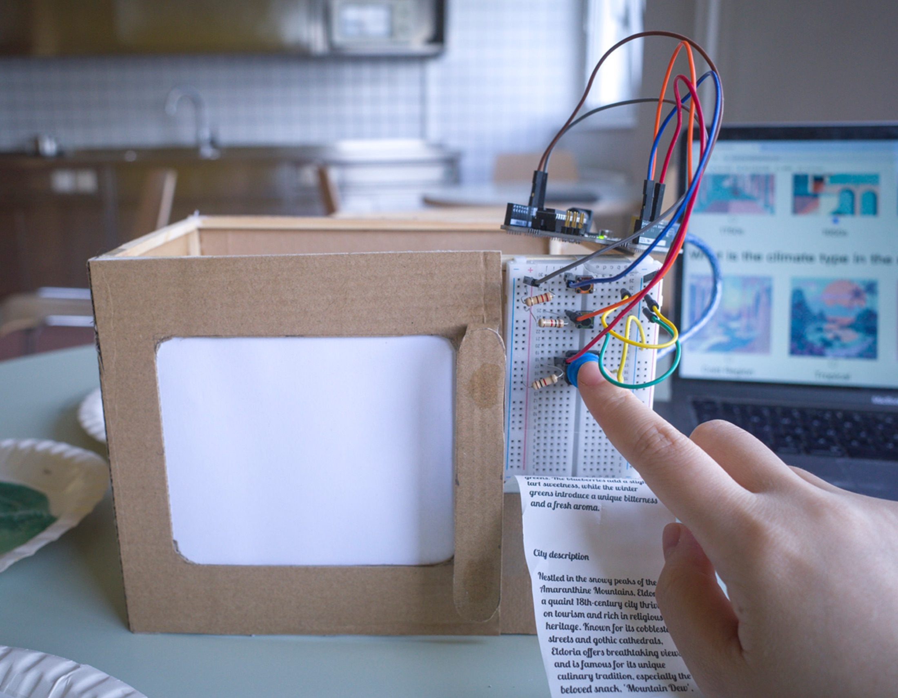
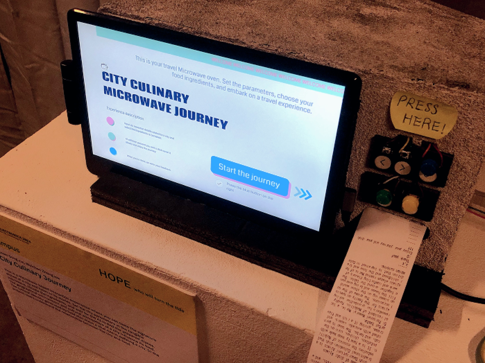
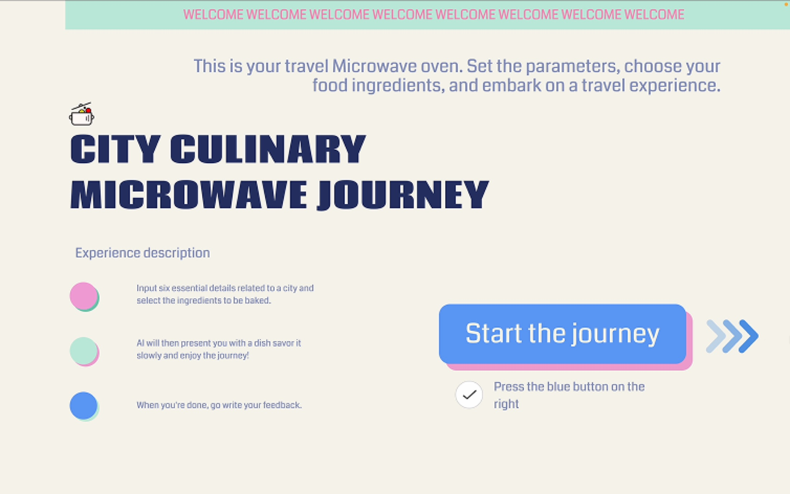
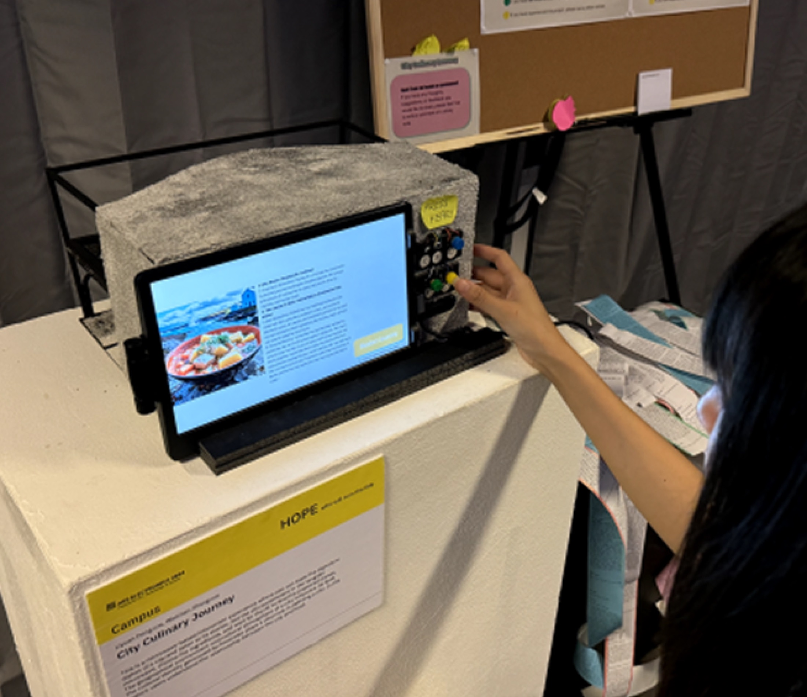
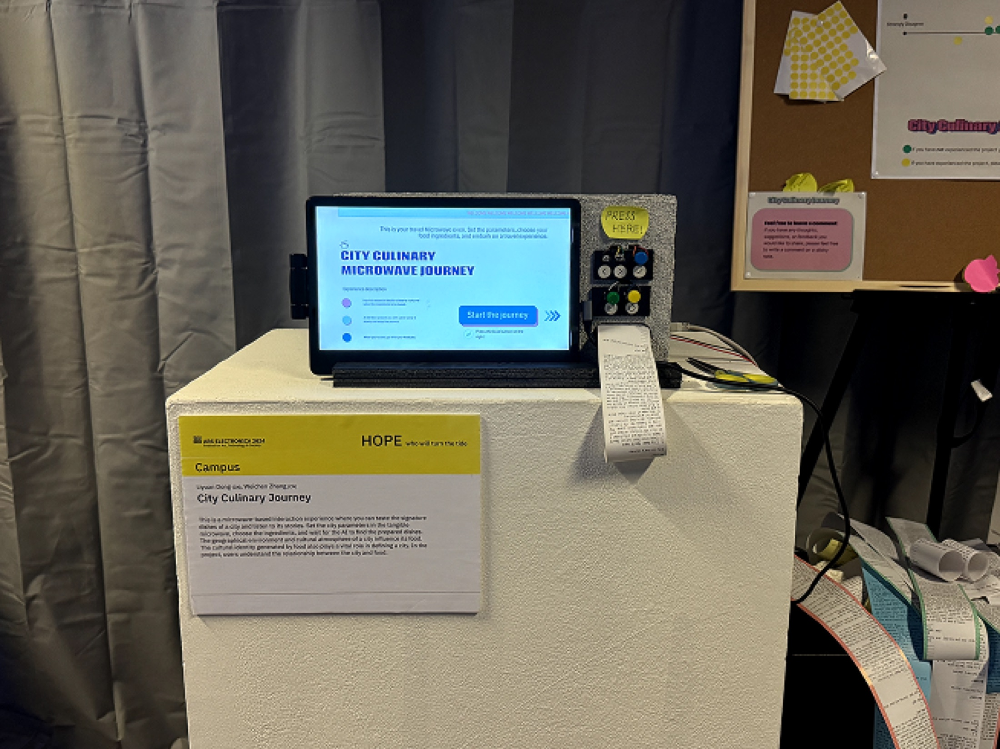

Interactive installation · Linz · 2024
City Culinary
Microwave Oven
What if a microwave could reveal the taste of a city's memory?

A city story, reheated.
City Culinary Microwave Oven transforms a familiar domestic appliance into a storytelling device. Participants select ingredients connected to different cities, then trigger AI-generated visuals and narratives that explore how food carries urban culture, memory, and migration.
There is no recipe to follow. Each experience is shaped by perception, choice, and chance, using taste as an entry point for rediscovering the city.
- Year
- 2024
- Location
- Linz, Austria
- Project link
- Ars Electronica Festival 2024 ↗
Interface, interaction, exhibition.
The experience begins with tangible controls on the microwave, passes through a digital interface that composes a city-and-food narrative, and ends as a shared audiovisual moment in the exhibition space.



